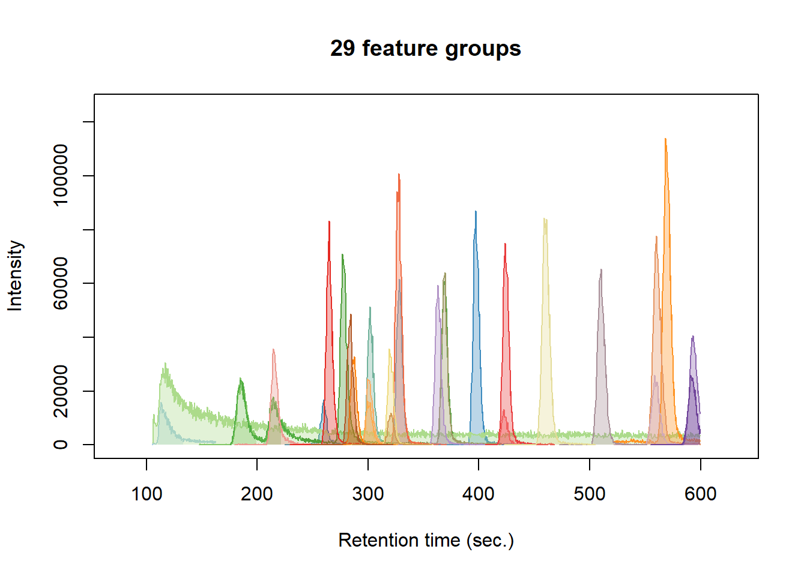
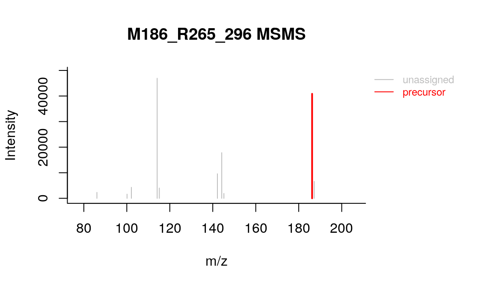
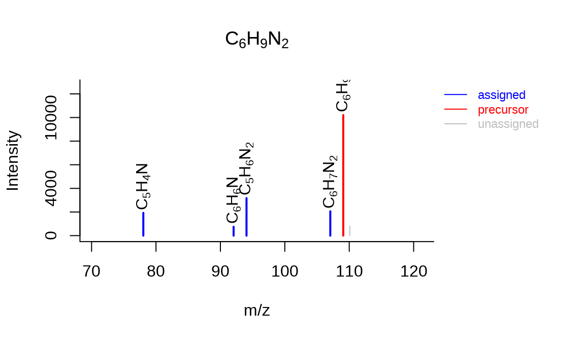
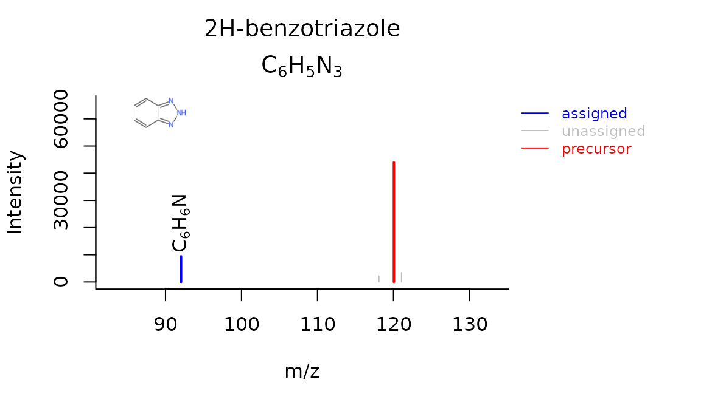
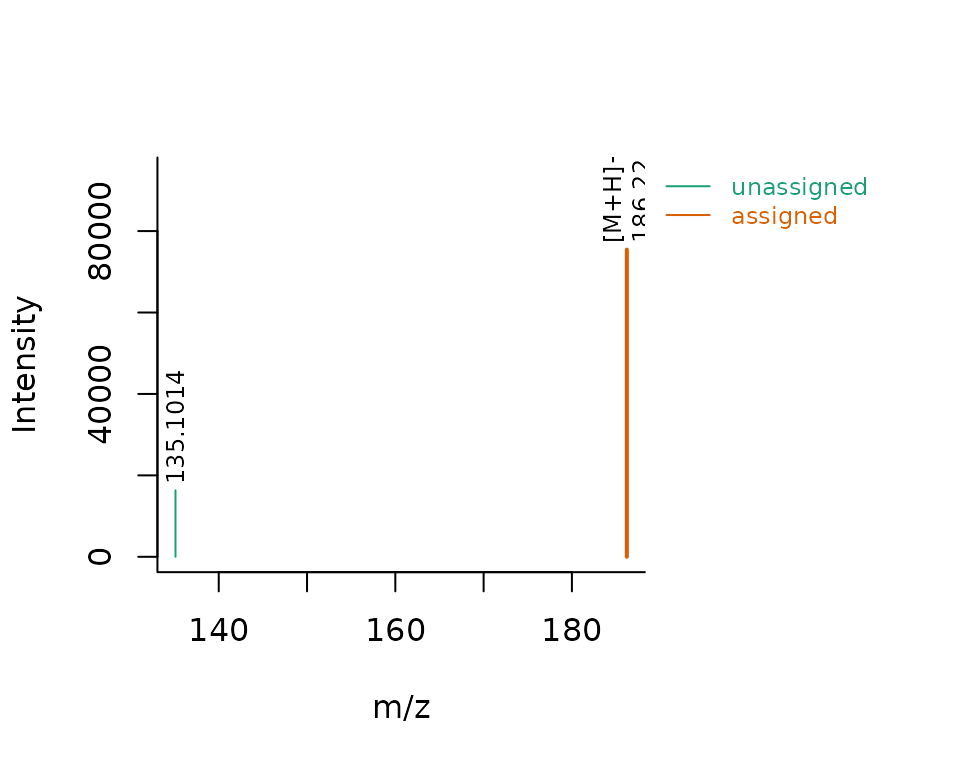
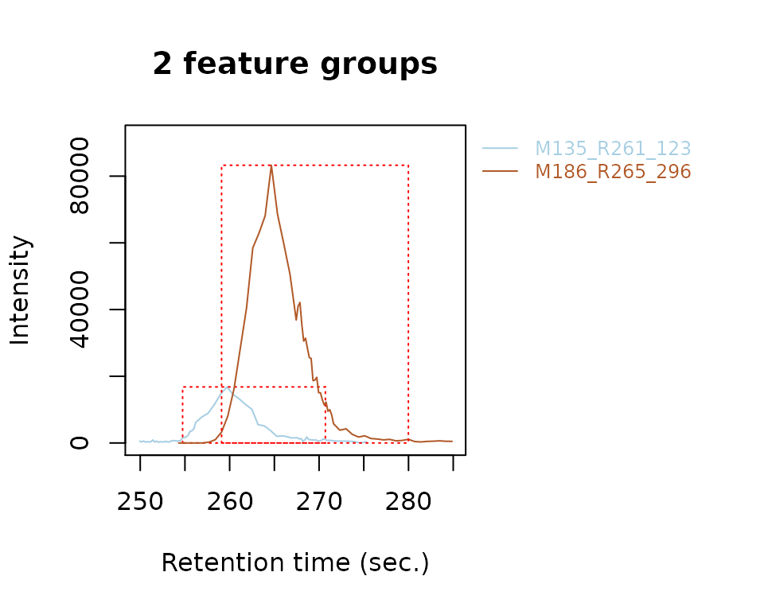

In this tutorial you will learn how to perform a simple non-target analysis with patRoon. This tutorial is not meant to give a detailed overview of patRoon. Instead, it serves as a quick introduction on how to use patRoon to setup and perform a full non-target analysis workflow.
The workflow in this tutorial consists of the following steps:
In this tutorial we will use example data provided within the patRoonData package. Please make sure this package is installed (see the readme for brief installation instructions). The example dataset contains LC-MS data for a standard mixture with known composition ('standard-X') and a blank solvent ('solvent-X'), both in triplicate. While this may not seem like the most exciting data, it does allow to demonstrate the most important functionalities of patRoon.
The provided analyses already have been exported to an open format (.mzML) and are ready to use. For your own data it may be necessary to first export your data to mzXML or mzML and perform other data pre-treatment steps such as mass re-calibration. This can be done using the tools from ProteoWizard or software from your mass spectrometer vendor. Alternatively, patRoon can do this automatically for your analyses with the convertMSFiles() function. Please see the reference manual or other vignettes for its usage.
Whenever you start a new non-target analysis it is highly recommended to start this from a fresh project directory. This directory will contain your R processing script(s) and any other output generated during the workflow. Note that this directory does not have to contain the raw MS data files. In fact, keeping these files separate may be handy, for instance, if you want to run multiple non-target analyses on these files or store the analysis files on a shared location.
Starting a new project typically consists of
setwd()).R processing script.Note that step 2 is important as any output files (e.g. reports and cached results) are stored to the current working directory by default. Consequently, always take care to ensure that this directory is active, for instance, after restarting R.
Steps 1-3 can be easily performed with the newProject() function. Alternatively, you can of course also perform these steps yourself. Both approaches will be discussed in the next sections.
Ensure that RStudio is active and start the new project utility:
patRoon::newProject()
NOTE Currently
newProject()only works when using RStudio.
A dialog should pop-up (see screenshot below) where you can specify where and how the new project will be generated, which analyses you want to include and define a basic workflow. Based on this input a new project with a template script will be automatically generated.
For this tutorial make the following selections
reportPDF() and reportHTML() functions largely overlap each other in functionality, but are both enabled for demonstration purposes).For RStudio users it is easiest to simply create a new RStudio project (e.g. File --> New Project). This will create a new directory and ensure that the working directory is set whenever you re-open it. Alternatively, you can do this manually, for instance:
projDir <- "~/myProjectDir" dir.create(projDir) setwd(projDir)
The next step is to create a new R script. For this tutorial simply copy the script that is shown in the next section to a new .R file.
After you ran newProject() the file below will be created. Before running this script, however, we still have to add and modify some of its code. In the next sections you will learn more about each part of the script, make the necessary changes and run its code.
## Script automatically generated on Mon Mar 25 08:24:32 2019 library(patRoon) # ------------------------- # initialization # ------------------------- workPath <- "C:/myproject" setwd(workPath) # Take example data from patRoonData package (triplicate solvent blank + triplicate standard) anaInfo <- generateAnalysisInfo(paths = patRoonData::exampleDataPath(), groups = c(rep("solvent", 3), rep("standard", 3)), blanks = "solvent") # ------------------------- # features # ------------------------- # Find all features. # NOTE: see manual for many more options fList <- findFeatures(anaInfo, "openms") # Group and align features between analysis fGroups <- groupFeatures(fList, "openms") # Basic rule based filtering fGroups <- filter(fGroups, preAbsMinIntensity = 100, absMinIntensity = 10000, relMinReplicateAbundance = 1, maxReplicateIntRSD = 0.75, blankThreshold = 5, removeBlanks = TRUE, retentionRange = NULL, mzRange = NULL) # ------------------------- # annotation # ------------------------- # Retrieve MS peak lists avgPListParams <- getDefAvgPListParams(clusterMzWindow = 0.005) mslists <- generateMSPeakLists(fGroups, "mzr", maxMSRtWindow = 5, precursorMzWindow = 4, avgFeatParams = avgPListParams, avgFGroupParams = avgPListParams) # uncomment and configure for extra filtering of MS peak lists # mslists <- filter(mslists, absMSIntThr = NULL, absMSMSIntThr = NULL, relMSIntThr = NULL, # relMSMSIntThr = NULL, topMSPeaks = NULL, topMSMSPeaks = NULL, # deIsotopeMS = FALSE, deIsotopeMSMS = FALSE) # Calculate formula candidates formulas <- generateFormulas(fGroups, "genform", mslists, relMzDev = 5, adduct = "[M+H]+", elements = "CHNOP", calculateFeatures = TRUE, featThreshold = 0.75) # Find compound structure candidates compounds <- generateCompounds(fGroups, mslists, "metfrag", method = "CL", dbRelMzDev = 5, fragRelMzDev = 5, fragAbsMzDev = 0.002, adduct = "[M+H]+", database = "pubchem", maxCandidatesToStop = 2500) compounds <- addFormulaScoring(compounds, formulas, TRUE) # Perform automatic generation of components components <- generateComponents(fGroups, "ramclustr", ionization = "positive") # ------------------------- # reporting # ------------------------- reportCSV(fGroups, path = "report", reportFeatures = FALSE, formulas = formulas, compounds = compounds, compoundsNormalizeScores = "max", components = components) reportPDF(fGroups, path = "report", reportFGroups = TRUE, formulas = formulas, reportFormulaSpectra = TRUE, compounds = compounds, compoundsNormalizeScores = "max", components = components, MSPeakLists = mslists) reportHTML(fGroups, path = "report", reportPlots = c("chord", "venn", "upset", "eics", "formulas"), formulas = formulas, compounds = compounds, compoundsNormalizeScores = "max", components = components, MSPeakLists = mslists, selfContained = FALSE, openReport = TRUE)
Now that you have generated a new project with a template script it is time to make some minor modifications and run it afterwards. In the next sections each major part of the script (initialization, finding and grouping features, annotation and reporting) will be discussed separately. Each section will briefly discuss the code, what needs to be modified and finally you will run the code. In addition, several functions will be demonstrated that you can use to inspect generated data.
The first part of the script loads patRoon, makes sure the current working directory is set correctly and loads information about the analyses. This part in your script looks more or less like this:
library(patRoon) workPath <- "C:/my_project" setwd(workPath) # Take example data from patRoonData package (triplicate solvent blank + triplicate standard) anaInfo <- generateAnalysisInfo(paths = patRoonData::exampleDataPath(), groups = c(rep("solvent", 3), rep("standard", 3)), blanks = "solvent")
After you ran this part the analysis information should be stored in the anaInfo variable. This information is important as it will be required for subsequent steps in the workflow. Lets peek at its contents:
anaInfo#> path analysis group blank
#> 1 /usr/local/lib/R/site-library/patRoonData/extdata solvent-1 solvent solvent
#> 2 /usr/local/lib/R/site-library/patRoonData/extdata solvent-2 solvent solvent
#> 3 /usr/local/lib/R/site-library/patRoonData/extdata solvent-3 solvent solvent
#> 4 /usr/local/lib/R/site-library/patRoonData/extdata standard-1 standard solvent
#> 5 /usr/local/lib/R/site-library/patRoonData/extdata standard-2 standard solvent
#> 6 /usr/local/lib/R/site-library/patRoonData/extdata standard-3 standard solventAs you can see the generated data.frame consists of four columns:
The latter two columns are especially important for data cleanup, which will be discussed later. For now keep in mind that the analyses for the solvents and standards each belong to a different replicate group ("solvent" and "standard") and that the solvents should be used for blank subtraction.
In this tutorial the analysis information was generated by the generateAnalysisInfo() function. This function will scan a given directory for MS data files and automatically fill in the path and analysis columns from this information. In addition, you can pass replicate group and blank information to this function as was done in the code above.
NOTE Of course nothing stops you from creating a
data.framewith analysis information manually withinRor load the information from a csv file. In fact, when you create a new project withnewProject()you can select to generate a separate csv file with analysis information (i.e. by filling in the right information in the analysis tab).
NOTE The blanks for the solvent analyses are set to themselves. This will remove any features from the solvents later in the workflow, which is generally fine as we are usually not interested in the blanks anyway.
The first step of a LC-MS non-target analysis workflow is typically the extraction of so called 'features'. While sometimes slightly different definitions are used, a feature can be seen as a single peak within an extracted ion chromatogram. For a complex sample it is not uncommon that hundreds to thousands of features can extracted. Because these large numbers this process is typically automatized nowadays.
To obtain all the features within your dataset the findFeatures function is used. This function requires data on the analysis information (anaInfo variable created earlier) and the desired algorithm that should be used. On top of that there are many more options that can significantly influence the feature finding process, hence, it is important to evaluate results afterwards.
In this tutorial we will use the OpenMS software to find features and stick with default parameters:
fList <- findFeatures(anaInfo, "openms")
#> Finding features with OpenMS for 6 analyses ...
#> Done!
#> Feature statistics:
#> solvent-1: 385 (15.8%)
#> solvent-2: 372 (15.2%)
#> solvent-3: 376 (15.4%)
#> standard-1: 437 (17.9%)
#> standard-2: 443 (18.1%)
#> standard-3: 431 (17.6%)
#> Total: 2444After some processing time (especially for larger datasets), the next step is to group features. During this step, features from different analysis are grouped, optionally after alignment of their retention times. This grouping is necessary because it is common that instrumental errors will result in (slight) variations in both retention time and m/z values which may complicate comparison of features between analyses. The resulting groups are referred to as feature groups and are crucial input for subsequent workflow steps.
To group features the groupFeatures() function is used, which has similar argument requirements as findFeatures() and likewise has many more options to tune the process.
fGroups <- groupFeatures(fList, "openms")
The next step is to perform some basic rule based filtering with the filter() function. As its name suggests this function has several ways to filter data. It is a so called generic function and methods exists for various data types, such as the feature groups object that was made in the previous section (stored in the the fGroups variable).
fGroups <- filter(fGroups, preAbsMinIntensity = 100, absMinIntensity = 10000, relMinReplicateAbundance = 1, maxReplicateIntRSD = 0.75, blankThreshold = 5, removeBlanks = TRUE, retentionRange = NULL, mzRange = NULL)
#> Applying intensity filter... Done! Filtered 0 (0.00%) groups. Remaining: 593.
#> Applying replicate abundance filter... Done! Filtered 211 (35.58%) groups. Remaining: 382.
#> Applying blank filter... Done! Filtered 287 (75.13%) groups. Remaining: 95.
#> Applying intensity filter... Done! Filtered 58 (61.05%) groups. Remaining: 37.
#> Applying replicate abundance filter... Done! Filtered 3 (8.11%) groups. Remaining: 34.
#> Applying replicate group filter... Done! Filtered 0 (0.00%) groups. Remaining: 34.The following filterings steps will be performed:
absMinIntensity). This filter is an effective way to not only remove 'noisy' data, but, for instance, can also be used to remove any low intensity features which likely miss MS/MS data.relMinReplicateAbundance. The value is relative, for instance, a value of 0.5 would mean that a feature needs to be present in half of the replicates. In this tutorial we use a value of 1 which means that a feature should be present in all replicate samples. This is a very effective filter in removing any outliers, for instance, caused by features which don't actually represent a well defined chromatographic peak.maxReplicateIntRSD argument.blankThreshold: the given value of 5 means that the intensity of a feature needs to be at least five times higher compared to the (average) blank signal.The removeBlanks argument tells will remove all blank analyses after filtering. The retentionRange and mzRange arguments are not used here, but could be used to filter out any features outside a give retention or m/z range. There are many more filters: see ?filter() for more information.
As you may have noticed quite a large part of the features are removed as a result of the filtering step. However, using the right settings is a very effective way to separate interesting data from the rest.
The next logical step in a non-target workflow is often to perform further prioritization of data. However, this will not be necessary in this tutorial as our samples are just known standard mixtures.
In order to have a quick peek at the results we can use the default printing method:
fGroups#> A featureGroupsOpenMS object (derived from featureGroups -> workflowStep)
#> Object size (indication): 240.5 kB
#> Algorithm: openms
#> Feature groups: M109_R116_56, M120_R328_81, M134_R399_118, M135_R261_123, M137_R303_127, M142_R116_141, ... (34 total)
#> Analyses: standard-1, standard-2, standard-3 (3 total)
#> Replicate groups: standard (1 total)
#> Replicate groups used as blank: solvent (1 total)Furthermore, the as.data.table() function can be used to have a look at generated feature groups and their intensities (i.e. peak heights) across all analyses:
head(as.data.table(fGroups))
#> group ret mz standard-1 standard-2 standard-3
#> 1: M109_R116_56 116.0809 109.0759 12064 12080 10996
#> 2: M120_R328_81 327.9955 120.0555 55936 61668 59624
#> 3: M134_R399_118 398.6365 134.0712 84880 75580 74956
#> 4: M135_R261_123 260.5933 135.1014 15696 16476 16804
#> 5: M137_R303_127 302.7823 137.0708 40272 46436 44724
#> 6: M142_R116_141 116.0809 141.9584 26424 25876 27816An overview of group properties is returned by the groupInfo() method:
#> rts mzs
#> M109_R116_56 116.0809 109.0759
#> M120_R328_81 327.9955 120.0555
#> M134_R399_118 398.6365 134.0712
#> M135_R261_123 260.5933 135.1014
#> M137_R303_127 302.7823 137.0708
#> M142_R116_141 116.0809 141.9584Finally, we can have a quick look at our data by plotting some nice extracted ion chromatograms (EICs) for all feature groups:
plotEIC(fGroups, colourBy = "fGroups", showFGroupRect = FALSE, showPeakArea = TRUE, topMost = 1, showLegend = FALSE)

Note that here we only plot the most intense feature of a feature group here (as set by topMost=1). See the reference docs for many more parameters to these functions (e.g. ?plotEIC).
After obtaining a good dataset with features of interest we can start moving to find their chemical identity. Before doing so, however, the first step is to extract all relevant MS data that will be used for annotation. The tutorial data was obtained with data-dependent MS/MS, so in the ideal case we can obtain both MS and MS/MS data for each feature group.
The generateMSPeakLists() function will perform this action for us and will generate so called MS peak lists in the process. These lists are basically (averaged) spectra in a tabular form. We will use algorithms from the mzR package to do so:
avgPListParams <- getDefAvgPListParams(clusterMzWindow = 0.002) mslists <- generateMSPeakLists(fGroups, "mzr", maxMSRtWindow = 5, precursorMzWindow = 4, avgFeatParams = avgPListParams, avgFGroupParams = avgPListParams)
#> Loading all MS peak lists for 34 feature groups in analysis 'standard-1'...
#> ============================================================================================================================================================================================================================================================================================================================================================================================================================================================================================================================================================================================================================================================================================================================================================================================================================================================================================================================================================================================================================================================================================================================================================================================================================================================================================================================================================================================================================================================================================================================================================
#> Loading all MS peak lists for 34 feature groups in analysis 'standard-2'...
#> ============================================================================================================================================================================================================================================================================================================================================================================================================================================================================================================================================================================================================================================================================================================================================================================================================================================================================================================================================================================================================================================================================================================================================================================================================================================================================================================================================================================================================================================================================================================================================================
#> Loading all MS peak lists for 34 feature groups in analysis 'standard-3'...
#> ============================================================================================================================================================================================================================================================================================================================================================================================================================================================================================================================================================================================================================================================================================================================================================================================================================================================================================================================================================================================================================================================================================================================================================================================================================================================================================================================================================================================================================================================================================================================================================
#> Generating averaged peak lists for all feature groups...
#> ============================================================================================================================================================================================================================================================================================================================================================================================================================================================================================================================================================================================================================================================================================================================================================================================================================================================================================================================================================================================================================================================================================================================================================================================================================================================================================================================================================================================================================================================================================================================================================Note that we lowered the clusterMzWindow value to 0.002. This window is used during averaging to cluster similar m/z values together. In general the better the resolution of your MS instrument, the lower the value can be set.
Similar to feature groups the filter() generic function can be used to clean up the peak lists afterwards:
mslists <- filter(mslists, relMSMSIntThr = 0.02, topMSMSPeaks = 10)
#> Filtering MS peak lists for 34 feature groups in analysis 'standard-1'...
#> ============================================================================================================================================================================================================================================================================================================================================================================================================================================================================================================================================================================================================================================================================================================================================================================================================================================================================================================================================================================================================================================================================================================================================================================================================================================================================================================================================================================================================================================================================================================================================================
#> Filtering MS peak lists for 34 feature groups in analysis 'standard-2'...
#> ============================================================================================================================================================================================================================================================================================================================================================================================================================================================================================================================================================================================================================================================================================================================================================================================================================================================================================================================================================================================================================================================================================================================================================================================================================================================================================================================================================================================================================================================================================================================================================
#> Filtering MS peak lists for 34 feature groups in analysis 'standard-3'...
#> ============================================================================================================================================================================================================================================================================================================================================================================================================================================================================================================================================================================================================================================================================================================================================================================================================================================================================================================================================================================================================================================================================================================================================================================================================================================================================================================================================================================================================================================================================================================================================================
#> Generating averaged peak lists for all feature groups...
#> ============================================================================================================================================================================================================================================================================================================================================================================================================================================================================================================================================================================================================================================================================================================================================================================================================================================================================================================================================================================================================================================================================================================================================================================================================================================================================================================================================================================================================================================================================================================================================================
#> Filtering averaged MS peak lists for 34 feature groups...
#> ============================================================================================================================================================================================================================================================================================================================================================================================================================================================================================================================================================================================================================================================================================================================================================================================================================================================================================================================================================================================================================================================================================================================================================================================================================================================================================================================================================================================================================================================================================================================================================
#> Done! Filtered 345 (5.34%) MS peaks. Remaining: 6120Here, all MS/MS mass peaks with intensities below 2% are removed and from the remaining peaks no more than the ten most intense are retained.
Using the data from the MS peak lists generated during the previous step we can generate a list of formula candidates for each feature group which is based on measured m/z values, isotopic patterns and presence of MS/MS fragments. In this tutorial we will use this data as an extra hint to score candidate chemical structures generated during the next step. The command below will use GenForm to perform this step. Again running this code may take some time.
formulas <- generateFormulas(fGroups, "genform", mslists, relMzDev = 5, adduct = "[M+H]+", elements = "CHNOPSCl", calculateFeatures = TRUE, featThreshold = 0.75)
#> Loading all formulas for analysis 'standard-1'...
#> ============================================================================================================================================================================================================================================================================================================================================================================================================================================================================================================================================================================================================================================================================================================================================================================================================================================================================================================================================================================================================================================================================================================================================================================================================================================================================================================================================================================================================================================================================================================================================================
#> Loaded 176 formulas for 32 features (94.12%).
#> Loading all formulas for analysis 'standard-2'...
#> ============================================================================================================================================================================================================================================================================================================================================================================================================================================================================================================================================================================================================================================================================================================================================================================================================================================================================================================================================================================================================================================================================================================================================================================================================================================================================================================================================================================================================================================================================================================================================================
#> Loaded 177 formulas for 32 features (94.12%).
#> Loading all formulas for analysis 'standard-3'...
#> ============================================================================================================================================================================================================================================================================================================================================================================================================================================================================================================================================================================================================================================================================================================================================================================================================================================================================================================================================================================================================================================================================================================================================================================================================================================================================================================================================================================================================================================================================================================================================================
#> Loaded 172 formulas for 32 features (94.12%).
#> Generating feature group formula consensus...
#> ============================================================================================================================================================================================================================================================================================================================================================================================================================================================================================================================================================================================================================================================================================================================================================================================================================================================================================================================================================================================================================================================================================================================================================================================================================================================================================================================================================================================================================================================================================================================================================Note that you need to change the elements parameter to this function to make sure that formulae with sulfur and chloride (S/Cl) are also accepted. It is highly recommended to limit the elements (by default it is just C, H, N, O and P) as this can significantly reduce processing time and improbable formula candidates. In this tutorial we already knew which compounds to expect so the choice was easy, but often a good guess can be made in advance.
NOTE The
generateFormulas()function returns an object that contains formula candidates assigned for each feature group. In the above call thecalculateFeaturesargument is set toTRUE: by doing so formulae are first calculated for individual features within a feature group. These results are then used to generate a consensus candidate formula list for the complete feature group. During this process any outliers (defined byfeatThreshold) are automatically removed. In contrast, settingcalculateFeaturestoFALSEwill calculate formulae directly for feature groups (by using MS peak lists that have been averaged for the whole group). This will be significantly faster, but might produce (slightly) less accurate results.
Now it is time to actually see what compounds we may be dealing with. In this tutorial we will use MetFrag to come up with a list of possible candidates structures for each feature group. Before we can start you have to make sure that MetFrag can be found by patRoon. Download the MetFrag CLI jar file and specify its file location:
# change to the full path of the MetFrag CL jar file options(patRoon.path.MetFragCL = "~/MetFrag2.4.5-CL.jar")
Then generateCompounds() is used to execute MetFrag and generate the compounds.
compounds <- generateCompounds(fGroups, mslists, "metfrag", method = "CL", dbRelMzDev = 5, fragRelMzDev = 5, fragAbsMzDev = 0.002, adduct = "[M+H]+", database = "pubchem", maxCandidatesToStop = 5000)
#> Identifying 34 feature groups with MetFrag...
#> ============================================================================================================================================================================================================================================================================================================================================================================================================================================================================================================================================================================================================================================================================================================================================================================================================================================================================================================================================================================================================================================================================================================================================================================================================================================================================================================================================================================================================================================================================================================================================================
#> Loaded 2214 compounds from 23 features (67.65%).While generateCompounds() is running a list of candidate compound structures will be downloaded for every feature group and ranked according to various scoring parameters.
In this case we are using the PubChem database to retrieve candidates. Other commonly databases are ChemSpider and EPA's CompTox. See ?generateCompounds() for more information on possible databases and many other parameters that can be set.
NOTE You may get several warnings for feature groups for which no compounds could be searched. Usually this is because we set a hard limit with the
maxCandidatesToStopargument. Increasing this value is tempting, however, the compounds are searched through an online database and processing thousands of candidates takes too much time (and is not nice towards the servers running MetFrag!). An obvious drawback is that you will not get any results for feature groups with many candidates (however, these are generally difficult to sort out anyway!).
NOTE This is often one of the most time consuming steps during the workflow. For this reason, and in order to not 'abuse' the servers used by MetFrag, you should always take care to prioritize your data before running this function!
Finally we use the addFormulaScoring() function to improve ranking of candidates by incorporating the formula calculation data from the previous step.
compounds <- addFormulaScoring(compounds, formulas, updateScore = TRUE)
#> Adding formula scoring...
#> ============================================================================================================================================================================================================================================================================================================================================================================================================================================================================================================================================================================================================================================================================================================================================================================================================================================================================================================================================================================================================================================================================================================================================================================================================================================================================================================================================================================================================================================================================================================================================================Similar as feature groups we can quickly peek at some results:
mslists#> A MSPeakLists object (derived from workflowStep)
#> Object size (indication): 2.8 MB
#> Algorithm: mzr
#> Total peak count: 6120 (MS: 5528 - MS/MS: 592)
#> Average peak count/analysis: 2040 (MS: 1843 - MS/MS: 197)
#> Total peak lists: 185 (MS: 102 - MS/MS: 83)
#> Average peak lists/analysis: 62 (MS: 34 - MS/MS: 28)formulas#> A formulas object (derived from workflowStep)
#> Object size (indication): 854.7 kB
#> Algorithm: genform
#> Formulas assigned to features:
#> - Total formula count: 525
#> - Average formulas per analysis: 5.5
#> - Average formulas per feature: 5.5
#> Formulas assigned to feature groups:
#> - Total formula count: 131
#> - Average formulas per feature group: 4.1compounds#> A compoundsMF object (derived from compounds -> workflowStep)
#> Object size (indication): 7.2 MB
#> Algorithm: metfrag
#> Number of feature groups with compounds in this object: 23
#> Number of compounds: 2214 (total), 96.3 (mean), 14 - 100 (min - max)as.data.table(mslists)
#> group type mz intensity precursor
#> 1: M109_R116_56 MS 79.02100 2390.4646 FALSE
#> 2: M109_R116_56 MS 84.95949 3745.9596 FALSE
#> 3: M109_R116_56 MS 88.96836 1574.3283 FALSE
#> 4: M109_R116_56 MS 93.00019 704.0455 FALSE
#> 5: M109_R116_56 MS 97.96868 6248.0354 FALSE
#> ---
#> 1668: M293_R11_583 MS 272.94389 10122.1587 FALSE
#> 1669: M293_R11_583 MS 288.92212 98753.7460 FALSE
#> 1670: M293_R11_583 MS 290.26895 20768.1905 FALSE
#> 1671: M293_R11_583 MS 293.20852 6051.2698 TRUE
#> 1672: M293_R11_583 MS 294.93889 54849.9683 FALSEas.data.table(formulas)[, 1:7] # only show first columns for clarity
#> group analysis neutral_formula formula formula_mz error dbe
#> 1: M109_R116_56 standard-1 C6H8N2 C6H9N2 109.0760 0.500000 4
#> 2: M109_R116_56 standard-1 C6H8N2 C6H9N2 109.0760 0.500000 4
#> 3: M109_R116_56 standard-1 C6H8N2 C6H9N2 109.0760 0.500000 4
#> 4: M109_R116_56 standard-1 C6H8N2 C6H9N2 109.0760 0.500000 4
#> 5: M109_R116_56 standard-1 C6H8N2 C6H9N2 109.0760 0.500000 4
#> ---
#> 283: M279_R284_557 standard-1 C4H10N10O5 C4H11N10O5 279.0908 -2.400000 5
#> 284: M279_R284_557 standard-1 C13H20Cl2O2 C13H21Cl2O2 279.0913 -0.700000 3
#> 285: M293_R11_583 standard-1 C8H25N10P C8H26N10P 293.2074 -3.833333 2
#> 286: M293_R11_583 standard-1 C14H24N6O C14H25N6O 293.2084 -0.300000 6
#> 287: M293_R11_583 standard-1 C14H32N2S2 C14H33N2S2 293.2080 -1.900000 0as.data.table(compounds)[, 1:5] # only show first columns for clarity
#> group explainedPeaks score neutralMass SMILES
#> 1: M109_R116_56 3 4.483028 108.0687 C1=CC=C(C(=C1)N)N
#> 2: M109_R116_56 3 3.980290 108.0687 C1=CC(=CC=C1N)N
#> 3: M109_R116_56 3 3.447238 108.0687 C1=CC=C(C=C1)NN
#> 4: M109_R116_56 3 3.275154 108.0687 C1=CC(=CC(=C1)N)N
#> 5: M109_R116_56 3 2.970339 108.0687 CC1=NC(=CC=C1)N
#> ---
#> 2210: M254_R321_484 3 2.492776 253.0521 CC1=C(C=C(C=C1)N)S(=O)(=O)NC2=NOC=C2
#> 2211: M254_R321_484 5 2.492690 253.0521 CC1=NN=C(O1)C2=CC=CC=C2NS(=O)(=O)C
#> 2212: M254_R321_484 4 2.489731 253.0521 CC(C#N)S(=O)(=O)NC1=CC=C(C=C1)C(=O)N
#> 2213: M254_R321_484 5 2.488391 253.0521 CC1=NOC(=N1)C2=CC=CC=C2NS(=O)(=O)C
#> 2214: M254_R321_484 3 2.486534 253.0521 CNC1=CC=C(C=C1)S(=O)(=O)NC2=NOC=C2plotSpec(mslists, "M186_R265_296", MSLevel = 2)

plotSpec(formulas, "C6H9N2", "M109_R116_56", MSPeakLists = mslists)

plotSpec(compounds, 1, "M120_R328_81", mslists)

So far we mainly dealt with feature groups as if they are separate chemical compounds. However, formation of multiple ionization adducts (e.g. from sodium and potassium), isotopologues and/or in-source fragments may yield multiple m/z values for the same compound. As a result, multiple feature groups may be describing the same chemical compound. To reduce this complexity it is useful to generate so called components which are basically groups of feature groups which are likely to be the same compound (based on e.g. similarity of retention profiles). Afterwards, feature groups present in a component are annotated based on known chemical rules, which may further help compound identification.
Generating components is performed with the generateComponents() function:
components <- generateComponents(fGroups, "ramclustr", ionization = "positive")
#> Generating components with RAMClustR...
#> organizing dataset
#> normalizing dataset
#> calculating ramclustR similarity: nblocks = 1
#> 1
#> RAMClust feature similarity matrix calculated and stored:
#> RAMClust distances converted to distance object
#> fastcluster based clustering complete
#> dynamicTreeCut based pruning complete
#> RAMClust has condensed 34 features into 11 spectra
#> collapsing feature into spectral signal intensities
#> Annotating components...
#> 10 of 11
#> finishedThe results can be inspected similarly as seen before:
components#> A componentsRC object (derived from components -> workflowStep)
#> Object size (indication): 214.5 kB
#> Algorithm: ramclustr
#> Components: CMP1, CMP2, CMP3, CMP4, CMP5, CMP6, ... (11 total)
#> Number of feature groups in components: 28 (total), 2.5 (mean), 2 - 5 (min - max)plotSpec(components, "CMP6")

plotEIC(components, "CMP6", fGroups)

NOTE The componentization process must currently be seen as a tool to provide hints on how different features may be related to each other. Hence, results should always be checked manually, for instance, by the above commands or with the reports generated in the next step. For this reason, features that were annotated as e.g. adducts or fragments should not be blindly removed.
The last step of the workflow is typically reporting data: during this step all the collected data is transformed to graphical plots (reportPDF() and reportHTML()) or tabular csv data (reportCSV()).
reportCSV(fGroups, path = "report", reportFeatures = FALSE, formulas = formulas, compounds = compounds, compoundsNormalizeScores = "max", components = components) reportPDF(fGroups, path = "report", reportFGroups = TRUE, formulas = formulas, reportFormulaSpectra = TRUE, compounds = compounds, compoundsNormalizeScores = "max", components = components, MSPeakLists = mslists) reportHTML(fGroups, path = "report", reportPlots = c("chord", "venn", "upset", "eics", "formulas"), formulas = formulas, compounds = compounds, compoundsNormalizeScores = "max", components = components, MSPeakLists = mslists, selfContained = FALSE, openReport = TRUE)
The output of reportHTML() can be viewed here.
Note that these functions can be called at any time during the workflow. This may be especially useful if you want evaluate results during optimization or exploring the various algorithms and their parameters. In this case you can simply cherry pick the data that you want to report, for instance:
# only report feature groups (i.e. the bare minimum)
reportCSV(fGroups, path = "report", reportFeatures = FALSE)
# report compounds. Note that MSPeakLists (mslists variable) are required for formula/compound reporting
reportPDF(fGroups, path = "report", reportFGroups = TRUE,
compounds = compounds, compoundsNormalizeScores = "max",
MSPeakLists = mslists)
# only report components
reportHTML(fGroups, path = "report", reportPlots = c("chord", "venn", "upset", "eics"),
components = components
selfContained = FALSE, openReport = TRUE)In the previous sections the different parts of the processing script were discussed and where necessary modified. As a reference, the final script look similar ot this:
## Script automatically generated on Mon Mar 25 08:24:32 2019 library(patRoon) # ------------------------- # initialization # ------------------------- workPath <- "C:/myproject" setwd(workPath) # Take example data from patRoonData package (triplicate solvent blank + triplicate standard) anaInfo <- generateAnalysisInfo(paths = patRoonData::exampleDataPath(), groups = c(rep("solvent", 3), rep("standard", 3)), blanks = "solvent") # ------------------------- # features # ------------------------- # Find all features. # NOTE: see manual for many more options fList <- findFeatures(anaInfo, "openms") # Group and align features between analysis fGroups <- groupFeatures(fList, "openms") # Basic rule based filtering fGroups <- filter(fGroups, preAbsMinIntensity = 100, absMinIntensity = 10000, relMinReplicateAbundance = 1, maxReplicateIntRSD = 0.75, blankThreshold = 5, removeBlanks = TRUE, retentionRange = NULL, mzRange = NULL) # ------------------------- # annotation # ------------------------- # Retrieve MS peak lists avgPListParams <- getDefAvgPListParams(clusterMzWindow = 0.002) mslists <- generateMSPeakLists(fGroups, "mzr", maxMSRtWindow = 5, precursorMzWindow = 4, avgFeatParams = avgPListParams, avgFGroupParams = avgPListParams) mslists <- filter(mslists, relMSMSIntThr = 0.02, topMSMSPeaks = 10) # Calculate formula candidates formulas <- generateFormulas(fGroups, "genform", mslists, relMzDev = 5, adduct = "[M+H]+", elements = "CHNOPSCl", calculateFeatures = TRUE, featThreshold = 0.75) # Find compound structure candidates compounds <- generateCompounds(fGroups, mslists, "metfrag", method = "CL", dbRelMzDev = 5, fragRelMzDev = 5, fragAbsMzDev = 0.002, adduct = "[M+H]+", database = "pubchem", maxCandidatesToStop = 5000) compounds <- addFormulaScoring(compounds, formulas, TRUE) # Perform automatic generation of components components <- generateComponents(fGroups, "ramclustr", ionization = "positive") # ------------------------- # reporting # ------------------------- reportCSV(fGroups, path = "report", reportFeatures = FALSE, formulas = formulas, compounds = compounds, compoundsNormalizeScores = "max", components = components) reportPDF(fGroups, path = "report", reportFGroups = TRUE, formulas = formulas, reportFormulaSpectra = TRUE, compounds = compounds, compoundsNormalizeScores = "max", components = components, MSPeakLists = mslists) reportHTML(fGroups, path = "report", reportPlots = c("chord", "venn", "upset", "eics", "formulas"), formulas = formulas, compounds = compounds, compoundsNormalizeScores = "max", components = components, MSPeakLists = mslists, selfContained = FALSE, openReport = TRUE)